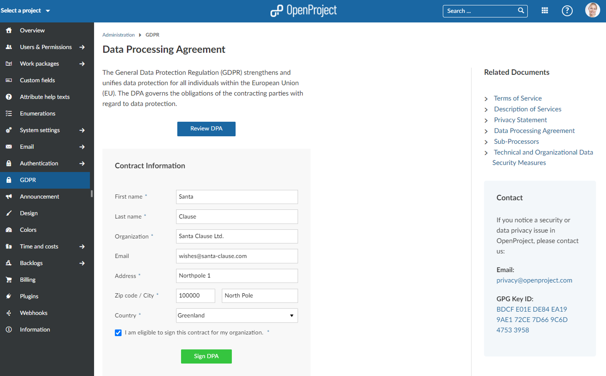

The General Data Protection Regulation (GDPR) is a European regulation to harmonize the rules within the EU for handling personal data of private companies or public organizations. The GDPR also extends this EU data protection regulation law to all foreign companies processing data of EU residents. The GDPR compliance is self-evident for OpenProject.
As a firm believer in open-source, OpenProject is invested heavily in the freedom of users. This encompasses the software freedoms granted by the GPLv3 and employed by OpenProject and naturally extends to the rights and freedoms granted by the General Data Protection Regulation (GDPR). In the same transparent fashion that we develop our software, we are committed to transparency regarding data privacy protection of our users.
For EU customers it is required by the GDPR to sign a data processing agreement (sometimes called data processing addendum) before using our Cloud edition.
With OpenProject 11.1, we have automated this process in order to reduce manual effort on both sides. This way, it is even easier to comply with GDPR.
Please navigate to -> Administration -> GDPR and you can now online review and sign your DPA document directly within the application.
